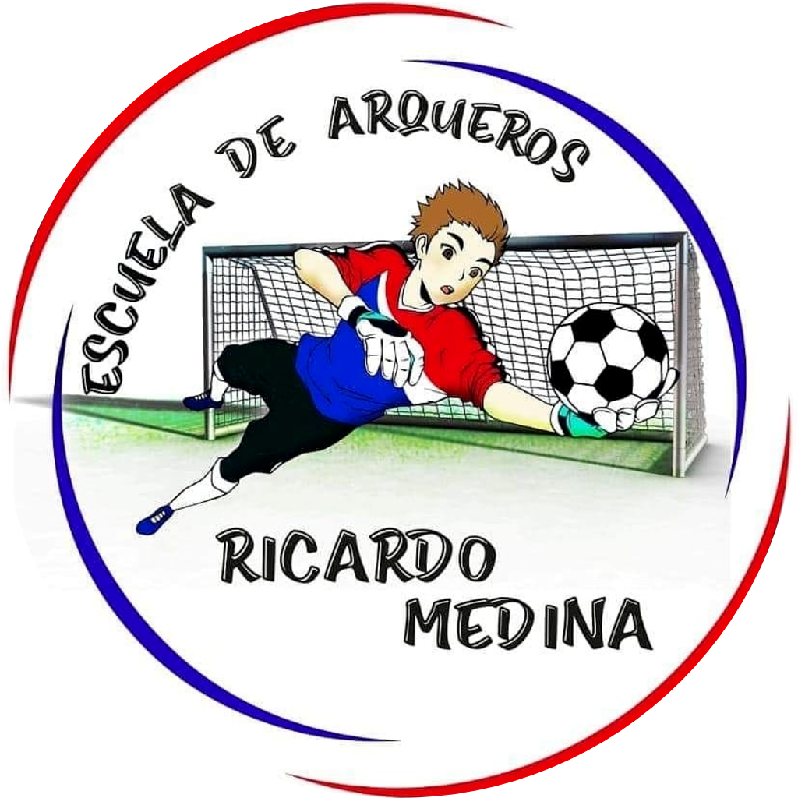
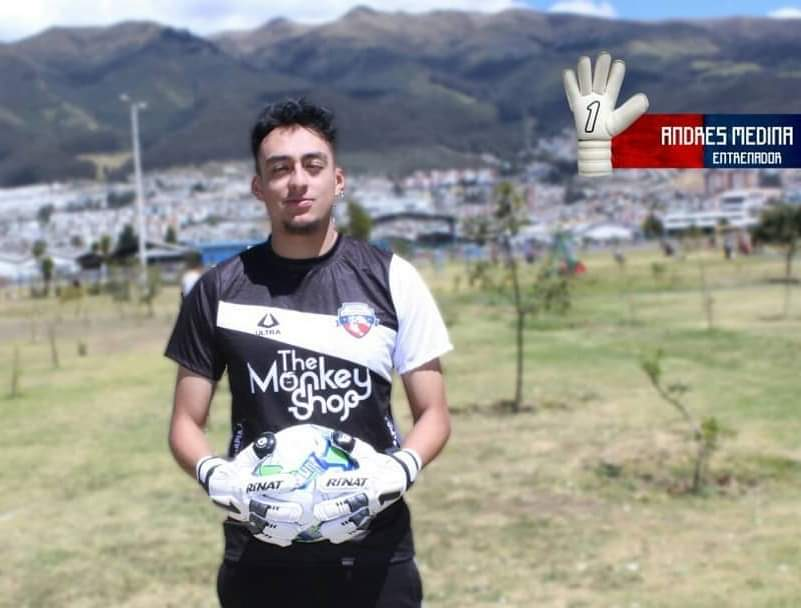
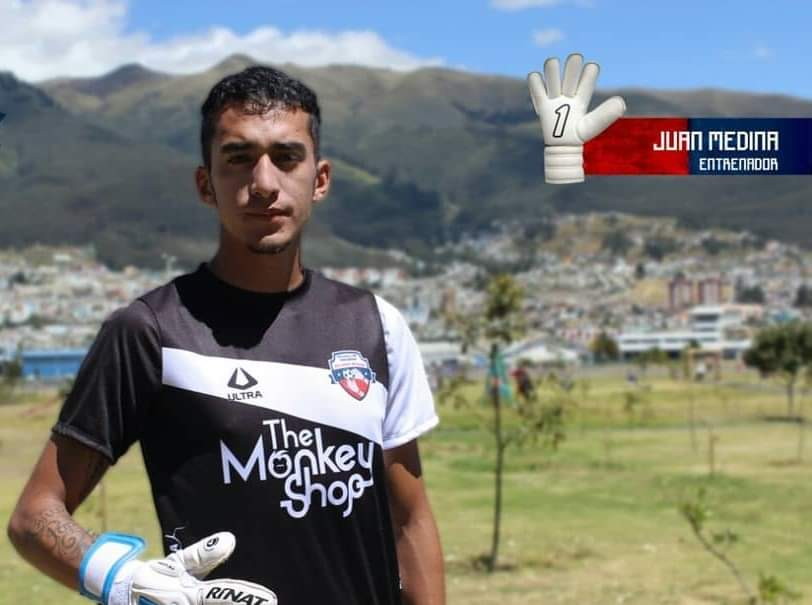

<ion-content>
  <ion-slides>

    <ion-slide>
      <div class="slide">
        
        <h2 style="font-weight:bold;">Bienvenido</h2>
        <p>Quieres aprender y mejorar tus cualidades de arquero ....!!!!!
          Contamos con personal capacitado y con experiencia en el futbol profesional ...!!</p>
      </div>
    </ion-slide>

    <ion-slide>
      
      <h2 style="font-weight:bold;">Juan Ricardo Medina Flores</h2>
      <p>Técnicos deportivos – CD Puerta de Madrid    (Julio 2017).</p>
      <p>Coaching – Fundamentos, Psicología y Corazón (Enero 2019).</p>
      <p>Seminario de Entrenadores de Arqueros Federación Ecuatoriana de Fútbol y Asociación de Entrenadores de Arqueros del Ecuador
        (Diciembre 2020 – Febrero 2021).</p>  

    </ion-slide>

    <ion-slide>
      
      <h2 style="font-weight:bold;">Andres Medina Flores</h2>

      <p>Seminario online para entrenadores de porteros etapas evolutivas del arquero (agosto 2020).</p>
      <p>Seminario para entrenadores de porteros (diciembre 2020 -  febrero 2021) federación ecuatoriana de fútbol y la asociación de entrenadores de arqueros del Ecuador</p>
      <p>Coordinador del área de capacitación en la asociación de entrenadores de arqueros del Ecuador (ADEAPEC).</p>

    </ion-slide>

    <ion-slide>
      
      <h2 style="font-weight:bold;">Juan Sebastián Medina Flores</h2>
      <p>ESBS European Sport Business School Preparación física en los arqueros – 2017.</p>
      <p>ANEFF Curso Online preparación de Arqueros y metodologías 2018.</p>
      <p>Congreso Online CIEP GK1 CHILE – (Junio – Julio 2020).</p>
      <p>Seminario de Entrenadores de Arqueros Federación Ecuatoriana de Fútbol y Adeapec. (Diciembre 2020 – Febrero 2021).</p>
    </ion-slide>
    <ion-slide>
      
      <ion-button fill="clear" routerLink="/login">Comenzar<ion-icon slot="end" name="arrow-forward" ></ion-icon></ion-button>
    </ion-slide>

  </ion-slides>
</ion-content>
